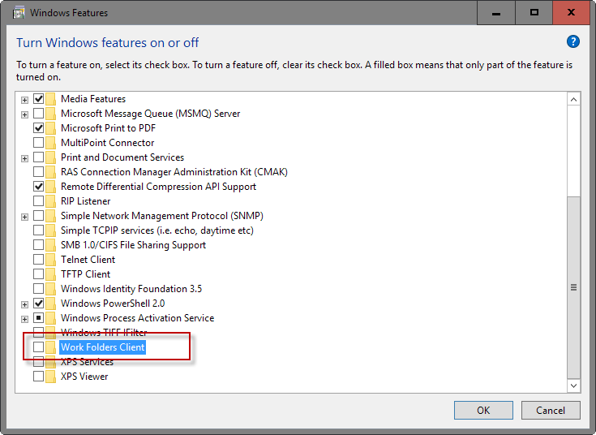
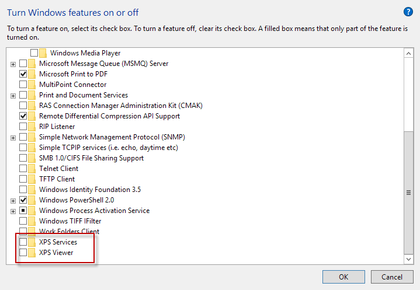

Microsoft operating systems ship with features, several of them enabled by default, that many Windows users may not need when it comes to running the computer.
These features are enabled for compatibility purposes, and while that is a good thing, may use memory, cpu cycles, or even expose the device to attacks or security issues.
The following guide lists installed features on Microsoft's operating system Windows 10, and their purpose.
The guide explains what each feature is designed for, and whether it makes sense to disable the feature on your machine.
Obviously, you don't want to disable or turn off features that you require, but since it is a simple "flip a switch" process, it is easy enough to restore functionality should you experience any issues after turning off features.
Windows 10 Features
The first thing you need to know is how to access the features listing on a device running Windows 10.
- Right-click on the Start Menu icon, and select Programs and Features from the menu.
- Alternatively, use Windows-X to display the menu and the mouse or touch afterwards to make the selection.
- When the Program and Features window opens, select Turn Windows features on or off.
Basic information
A checkmark indicates that a feature is installed, a dot that only part or a subset of it is available, and a blank box that nothing is turned on.
A click on the plus icon in front of a feature opens it, and displays the available items listed under it.
Please note that you may need to restart the PC before the changes take effect. Windows displays a prompt if that is necessary.
Internet Explorer 11

The default browser on Windows 10 machines is Microsoft Edge, but Microsoft ships a copy of Internet Explorer 11 with the operating system for legacy support reasons.
Recommendation: IE11 is the only browser that can access the Microsoft Update Catalog currently to download patches manually. If you don't require that, and don't need the browser to access legacy apps, turn it off.
Legacy Components DirectPlay

DirectPlay is a deprecated API that was once part of Microsoft's DirectX API. Microsoft deprecated DirectPlay in favor of Games for Windows Live more than ten years ago.
Classic computer games, those created ten or more years ago, may require DirectPlay but modern games released in the past ten years definitely don't.
Recommendation: Turn off unless one of your games requires DirectPlay.
Media Features Windows Media Player

Windows Media Player is the default multimedia player on Windows 10. It is a so-so program that lacks support for several popular video and audio codecs.
Recommendation: If you use a third-party client like VLC Media Player or SMPlayer, turn it off.
Microsoft Print to PDF

The feature adds an option to Windows to print any document to PDF. This is a virtual printer service that you can use to create PDF documents on Windows.
Recommendation: Turn off, unless you require the functionality.
Print and Document Services

The dot in the checkbox indicates that some items under Print and Document Services are enabled: Internet Printing Client, and Windows Fax and Scan.
Internet Printing Client
The Internet Printing Client -- as the name suggests -- enables printing using local network or Internet printers using the Internet Printing Protocol (IPP).
Recommendation: Turn off if you don't print at all, or if you only use a local printer.
Windows Fax and Scan
Windows Fax and Scan enables scanning and faxing support on Windows 10.
Recommendation: Turn off if you don't use the feature.
Remote Differential Compression API Support

Microsoft introduced Remote Differential Compression API Support with Windows Server 2003 R2, and included the feature in later client and server operating systems as well.
It is used by a small number of programs, especially on Windows Server machines, but rarely used on non-server systems.
Recommendation: Unless you know that a program uses it, turn it off. If you notice any issues running programs afterwards, turn the feature back on again.
Windows PowerShell 2.0

Windows PowerShell 2.0 may confuse users as PowerShell is an integral part of Windows. What you need to know to better understand the feature listing is that PowerShell 2.0 is not the latest version of the technology.
The most current version is PowerShell 5.0 which means that turning of PowerShell 2.0 support won't have an effect on the machine's ability to use PowerShell.
Recommendation: Unless you require PowerShell 2.0 support, turn it off.
Windows Process Activation Service
Windows Process Activation Service "generalizes the Internet Information Services (IIS) process model.
All the features of IIS that were previously available only to HTTP applications are now available to applications hosting Windows Communication Foundation (WCF) services, by using non-HTTP protocols. IIS 7.0 also uses Windows Process Activation Service for message-based activation over HTTP. (source)
The feature is aimed at developers, and usually not required by most Windwos users.
Recommendation: Unless you are a developer who requires the feature, turn it off.
Work Folders Client

Work Folders is a business / enterprise feature that allows you to access work related files while offline and on any device associated with you.
Recommendation: Turn off, unless it is used.
XPS Services and XPS Viewer

XPS is a file format created by Microsoft that has been designed as an alternative to Adobe's PDF format.
XPS Services add functionality to Windows to print and create XPS documents, and XPS Viewer to view XPS documents on the machine.
Recommendation: Unless you require XPS functionality, turn it off.
Closing Words
A large part of features that you can turn on or off are there for legacy purposes. Disabling features won't impact the loading of the Windows operating system negatively so that you can turn them on again should the need arise.
Now You: Which features have you turned off, or kept?

>IE11 is the only browser that can access the Microsoft Update Catalog currently to download patches manually.
What do you mean? I've always downloaded them with Firefox.
AFAIK, the only exception is the Windows 7 convenience roll-up ("SP2") and even that is supposed to be temporary.
You can access this website in Firefox? https://catalog.update.microsoft.com/
@ Martin
Firefox (Cyberfox) will not open the catalog.update page.
It is flagged as an insecure site because of an unsupported version of security protocol.
Firefox Error Code: SSL_ERROR_UNSUPPORTED_VERSION
If you bypass, it will display that it is only available for IE.
No, I can't.
I thought you were talking about downloading patches as msu files, which works in all browsers.
Microsoft announced some time ago that some patches would only be downloadable manually from the catalog and not the download center.
DirectPlay is still needed for famous all-time great games like Age of Empires. I hope Microsoft doesn't remove it.
Martin, I bypassed the link and you are right. The page IS only accessible using IE
You can't remove IE11, even with your mentioned guide, because the entire wpad/internet security zones are required on IE 11. I'm not sure if MS will ever change that. removing it has no security benefit but may ends up with problems. I not recommend to remove it. Some patches are also depending on that and you get possible issues, and then you waste time to search for it.
AFAIK all removing IE does is remove the shortcuts to it, IIRC even after removal the IE.exe and folder remain on the drive.
No IE.exe on my drive and I can't find a way to start IE.
it is iexplorer.exe not ie.exe
>removing it has no security benefit
Why not? I can't open .urls in IE after removing it, that alone probably prevents some exploits made for IE.
>but may ends up with problems.
I've been removing it (disabling it in Windows Features) for many years. Never had any problems.
Internet Security Zones are separate from IE. I've disabled IE feature since my work stopped requiring us to keep using IE for remote access.
After removing that feature, IE no longer functions and only few files files remain but nothing of the core files.
You can protect links via gpedit. It's listed under Security, which prevents external access to load IE or scripts. it's not a good solution but seriously better as 'removing' the entire IE.
The issue are depending, it's up to the user if you never use any related software or configuration then you (of course) not see something, but you will get problems e.g. if you try to config a global proxy via e.g. I2P. As said, the files are still present, your simply remove the hardlinks to it, but this not means external software can't load it.
Maybe with win 11 the old dependencies are removed but I doubt that IE is known as 'hard' implemented into the OS. Some security layers are depending on it, especially the security zone. I not know if that is a good suggestion to remove it.
Of course if it works for you I'm glad. Last I've tested the Pro versions of Windows I removed several 'internal' stuff like this and gpedit.msc and other things got corrupted. I'm also unsure if not a patch which is related to it, may override stuff after the next patchday. Still don't see any benefit.
A huge problem with disabling features is unless you keep a detailed record of what you disabled, you can wind up with problems later on when apps/functions that expect those features to be enabled fail. Blu-ray playback, for example, can fail depending on an obscure virtualization setting.
This exactly. The features mentioned in the article have no impact on performance/security and disabling theme gives us nothing. If people are looking into things to disable they should check what they have enabled in services.msc and change the state of unnecessary features to manual start, as then every app will be able to start them when needed and since all services have a real impact on security and stability.
There are security issues posted every month for various Windows components (IE, WMP, .NET, ...). Disabling them them, even if only partially, does improve security.
Do not remove media features. Its a run time for most smart phones. i am in with both hands to remove IE 11 but since i am Skype user if i remove it my Skype don`t work.
I have some DJ software that relies on WMP... I never use WMP so it's annoying that I have to keep it installed instead of disabling it completely.
But, at least I can though default programs prevent access to it. God knows why the software NEEDS it, but it wont even run without it being turned on
> There are security issues posted every month for various Windows components (IE, WMP, .NET, ...). Disabling them them, even if only partially, does improve security.
No it's not, maybe re-read the comments. 'Disabling' usually not removes the files or functions, it just hides GUi related symlinks. Even if it removes something after the next patchday it's again there because the patches needed files to verify/work, at last minimum in Winsxs the files are there. The security benefit is not there, because even if you managed to remove everything in program files or program Files (x86) a attacker can simply call sfc /scannow or similar command to 'repair' it, there exist also other commands to copy files from winsxs without that you even notice that. The security holes which getting fixed are depending what you use, if you never use wpad, netlogin and such your not really suffers from it. The huge difference here is that the possible trouble you get is not worth to do all this.
As I said it's depending, if you use VLC and other alternative programs which using own libaries you possible see never a single problem, but it starts if you try to use programs which are depending on this and then you will get troubles. E.g. if you remove wmp you can't rate the files with WMP based file rating system. Well it's not dramatically but only one example of many.
I guess the default programs are there for a reason and not because to troll users. If you an expert and have enough time, go for it but recommend to remove it for the mass is a bit strange. IE is imho the most critical part, as said security zones/proxy and such is highly depending on it and it's settings.
Update@Microsoft:
"To use this Web site's full functionality, you must be running Microsoft Internet Explorer 6.0 or later."
When you setup a system with some minor security, you can't go to micrsoft anymore.
Very nice article, many thanks for explaining what each entry is for, too.
Thanks for the tips, I have disabled lots of things and hopefully this will speed things up a bit!